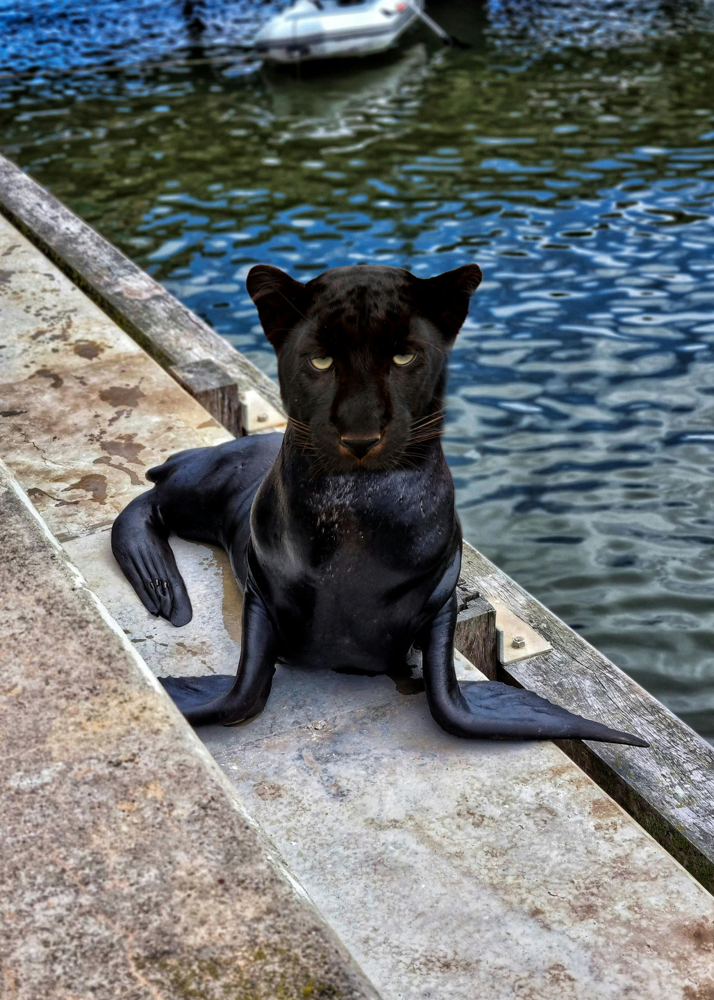

For this project I created a fictional Animal called the 'SeaPanther'. It is a Sealion and Panther combined. I wanted to test my creative skills combining two unlikely animals into one. It required alot of time and thought to carefully pick out these two animals and photos to use.